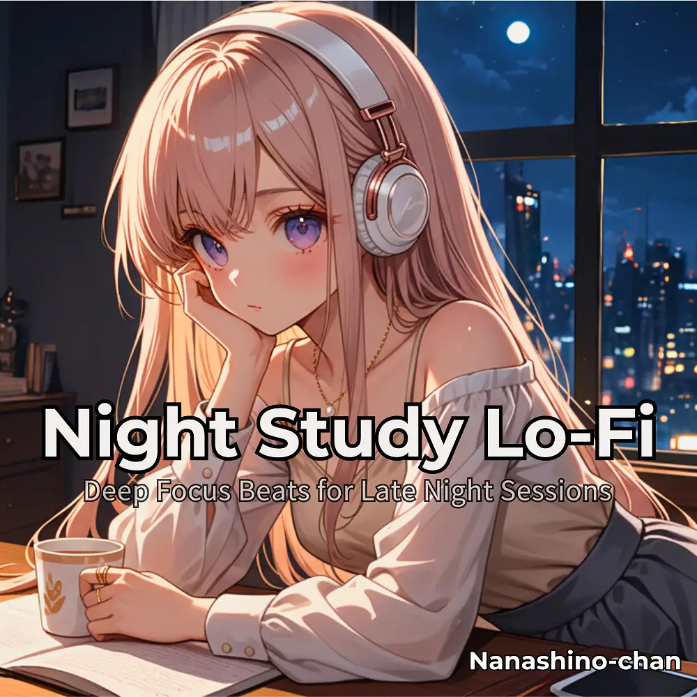

Lo-Fi
Night Study Lo-Fi:Deep Focus Beats for Late Night Sessions
Nanashino-chan
Nanashino-chanの「Night Study Lo-Fi:Deep Focus Beats for Late Night Sessions」。Lo-Fiを楽しめる全18曲のインストゥルメンタル作品です。「Midnight Focus / Quiet Determination」などを収録。気になる曲を試聴して、配信サービスでお気に入りを見つけてください。
2025-12-12 リリース · 18 曲 · Instrumental
アルバムを試聴
気になる音楽を、ここから。
曲を選ぶまでジャケットを表示します。試聴にはYouTubeを使用します。
YOUTUBE PREVIEW
試聴する曲を選んでください
曲を選ぶまでジャケットを表示します。試聴にはYouTubeを使用します。
再生できない場合は、配信サービスでアルバムや曲を開いてください。
配信サービスでアルバムを探す
「検索」のリンクは検索結果を開きます。サービス内でアルバムや曲を選択してください。
収録曲一覧 18
- 01Midnight Focus
- 02Quiet Determination
- 03Dreamy Thoughts
- 04Soft Ambitions
- 05Steady Beats
- 06Flow State
- 07Calm Rhythms
- 08Moonlit Reflections
- 09Gentle Persistence
- 10Deep Focus
- 11Nighttime Progress
- 12Quiet Motivation
- 13Relaxed Drive
- 14Peaceful Grind
- 15Subtle Energy
- 16Focused Intent
- 17Soothing Waves
- 18Final Stretch
SNSで使いたい音源を探す
「Nanashino-chan ＋ 曲名」をコピーして、SNSアプリの音源検索に貼り付けてください。音源の表示は地域やアカウントにより異なります。コピー機能は利用許諾を付与するものではありません。